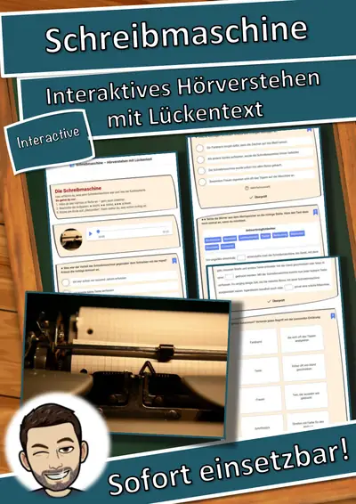

Die Tastatur – Zehnfingersystem und Tastenkürzel – Lesespurgeschichte mit Rätselaufgaben (Klasse 5)
Die Tastatur – Zehnfingersystem und Tastenkürzel – Lesespurgeschichte Informatik (Klasse 5)Schick deine Klasse auf eine Lesespur durch ein Medienzentrum! Juna und Ilias aus der 5c besuchen in den Ferien den Kurs „Fit an der Tastatur“. Bisher tippen beide mit zwei Fingern – das soll sich heute ändern. Die Kursleiterin Frau Okafor erklärt ihnen die Tastenblöcke, zeigt an einer alten Schreibmaschine, woher die QWERTZ-Anordnung kommt, und übt mit ihnen die Grundstellung mit den Tastmarken auf F und J. An der Fingerwand lernen sie das Zehnfingersystem, an den Riesentasten die wichtigsten Sondertasten, am Tipptrainer wartet eine Rechenaufgabe zu Anschlägen pro Minute, an der Kürzelwand die praktischsten Tastenkürzel und in der Haltungsecke die gesunde Sitzhaltung am Bildschirm. Ilias' Plüsch-Maus Kringel ist immer dabei. Am Ende jedes Abschnitts verrät ein Hinweis den nächsten Ort auf dem Plan – nur wer genau liest, findet den Weg und sammelt alle geheimen Buchstaben zum Lösungswort.
Die perfekte Lesespur für INFORMATIK in der 5. Klasse – ideal für den Einstieg in die Rechnerbedienung, für IT-Unterricht, Medienbildung, Vertretungsstunden und fächerübergreifend mit Deutsch und Mathematik: Sie verbindet sinnentnehmendes Lesen mit Grundwissen zur Tastatur und Rechenaufgaben mit natürlichen Zahlen. Das Material ist SOFORT EINSETZBAR, braucht keinen Computer und ist in DREI DIFFERENZIERUNGSSTUFEN (leicht ★ / mittel ★★ / schwer ★★★) angelegt.WICHTIG: Das komplette Material ist sowohl in FARBE als auch in SCHWARZ-WEISS enthalten – ideal zum Sparen von Druckkosten.DAS IST ENTHALTEN
- Lesespurgeschichte in 3 Niveaus (leicht, mittel, schwer)
- farbiger Plan vom Medienzentrum als Suchkarte
- Hörverstehen mit QR-Code zur MP3 (selbstständiges Hören mit Kopfhörern)
- vier Aufträge auf dem Weg: eine Zuordnung, ein Quiz, eine Rechenaufgabe und ein Steckbrief
- Rätselseite (Wörter-Suchsel + Fragen rund um die Tastatur)
- Ausmalbild zum Thema (Schreibtisch mit Tastatur und alter Schreibmaschine)
- ausführliches Lösungsblatt für die Lehrkraft
- alles zusätzlich als komplette Schwarz-Weiß-VarianteSO GEHT DIE LESESPURDie Kinder lesen ab START, finden im Text den nächsten Ort, suchen ihn auf dem Plan und lesen bei dieser Station weiter. An jeder richtigen Station gibt es einen Buchstaben. Eingeplante Sackgassen (Drucker, Garderobe, Sofaecke, Wasserspender) sind keine Stationen und dienen der Selbstkontrolle. Am Ende werden die gesammelten Buchstaben umgestellt und ergeben ein geheimes Lösungswort. (Die Lösungen sind selbstverständlich nur im Lösungsblatt für die Lehrkraft enthalten.)INHALTLICHER SCHWERPUNKTDie Tastatur sicher bedienen: Tastenblöcke, QWERTZ-Anordnung und ihre Herkunft von der Schreibmaschine, Grundstellung mit Tastmarken, das Zehnfingersystem mit festen Fingerzonen, Sondertasten (Umschalt-, Feststell-, Eingabe-, Rück- und Entfernen-Taste, Alt Gr für @), Anschläge pro Minute nach dem Prinzip „erst genau, dann schnell“, die wichtigsten Tastenkürzel (kopieren, einfügen, ausschneiden, rückgängig, speichern, alles markieren) und gesunde Haltung am Bildschirmarbeitsplatz.ABGEDECKTER LEHRPLAN (Klasse 5, Informatik)
- Informatik (LehrplanPLUS Bayern) – Jahrgangsstufe 5/6: Digitaler Informationsaustausch – Rechner sicher bedienen, Eingabegeräte nutzen, Texte mit dem Computer erstellen.
- Tastschreiben und Bildschirmarbeit: Grundstellung, Zehnfingersystem, Sondertasten, Tastenkombinationen, ergonomische Sitzhaltung.
- Mathematik – Jahrgangsstufe 5: Rechnen mit natürlichen Zahlen (Malnehmen, Teilen, Sachaufgaben).
- Deutsch – Jahrgangsstufe 5: Sachtexte sinnentnehmend lesen; Zuhören: einem Hörtext folgen (Hörverstehen mit MP3).Geeignet für Freiarbeit, Stationenlernen, Vertretungsstunden, Wochenplan, Projekttage und als Einstieg in ein Tastschreib-Training. Klassenstufe 5.
Ähnliche Materialien

Tastschreiben - Tastschreiben Laminate

Alphanumerische Tastatur Lückentext mit Wortspeicher Hörverstehen und Suchsel

Schreibmaschine – Hörverstehen mit Lückentext (interaktiv)

Woher kommt mein Spielzeug – die Weltreise eines Spielzeugautos – Lesespurgeschichte mit Rätselaufgaben (Klasse 8)

Halloween – woher das Fest kommt und wie man es in Irland feiert – Lesespurgeschichte mit Rätselaufgaben (Klasse 3)

Schreibmaschine Lückentext mit Wortspeicher Hörverstehen und Suchsel

Ferien Lückentext mit Wortspeicher Hörverstehen und Suchsel